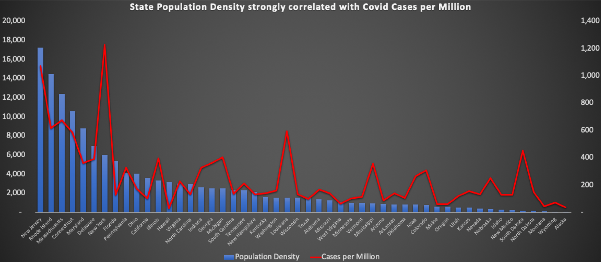
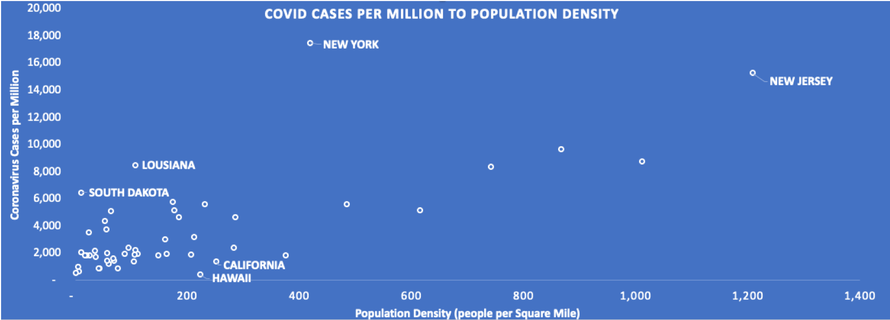

Coronavirus cases highly correlated with population densities
Posted on Sun 03 May 2020 in articles
Coronavirus cases highly correlated to population density
Population density is strongly correlated with Coronavirus case counts per million. While it is incredibly difficult to discern causality from social (and uncontrolled) data, we can measure correlations between data points to see if relationships exist and attempt to cohort the data to partially control for unrelated factors.
I regulated this simple analysis to each of the 50 states of the United States of America for many reasons. First, by isolating the population density analyis to America, it would control for intra-country differences in testing capacities, test types, obeyance to ordinances and reporting standards. Cohorting within a country felt appropriate. Second, I chose to do the analysis at a state level instead of a county level because of the relative ease for people to cross county lines by car during the Coronavirus pandemic. Therefore, I felt that measuring the differences at a state level was the most effective way to see the relationship between Coronavirus case counts per million and population densities.
Now to the findings. Based on data from May 1st, 2020, the correlation between coronavirus cases per million and state population densities is 0.71. This is a convincingly strong correlation that human proximity could be a strong predictor of coronavirus proliferation. See the correlations visualized below.


Some states appear to be outliers. These states include both coronavirus incidence rates higher than expected based on population density (Louisiana, South Dakota, New York) and lower than expected (California, Hawaii). While many explanations can exist for the variances depicted in these states, we do generally observe a strong correlation between population densities and coronavirus incidence rates, which generally aligns to the general scientific literature that coronavirus spreads from direct human interaction (and NOT from 5G Networks!!! But maybe from Tik Tok videos?).
If we can then assume population density is a significant and contributing factor to coronavirus growth, intra-state differences on the effective treatment of coronavirus should exist. For example, the risks for coronavirus spreading in Alaska are different than the risks in New York City. Furthermore, cities with dense populations like San Francisco might need to exercise even more caution with a more stringent and longer lasting shelter in place orders than our more rural peers in other portions of California.
While the exact level of caution to effectively combat Coronavirus is still unknown, population density is strongly correlated to coronavirus case counts per million. Keep your distance! Except don't keep your distance in the comment section below! What do you think? Should different areas of the country have different social distancing guidelines since population density seems to be a strong predictor of coronavirus incidence rates? Why or why not?
-- Ryan Benkeser